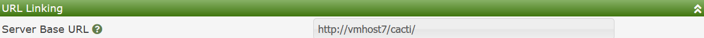
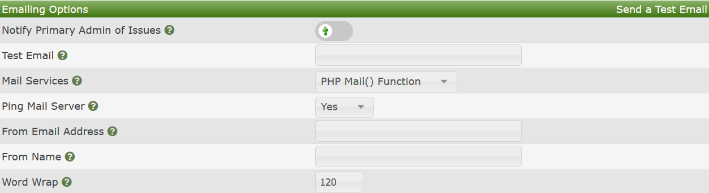
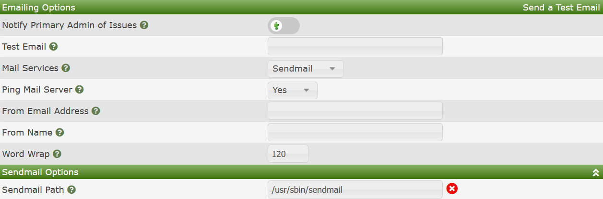
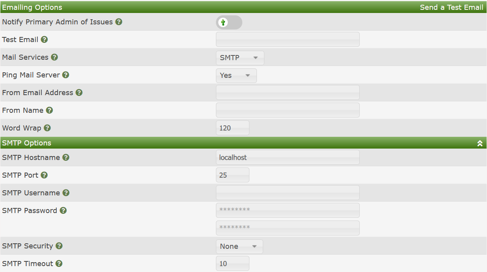
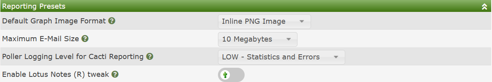
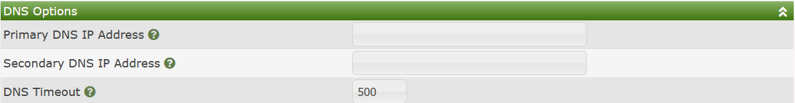

This area of Cacti is where you configure core notification settings as well as settings to using alternate DNS' servers associated with certain Cacti plugins.
The URL Linking settings provide the Cacti administrator a URL prefix that will point properly to the main Cacti site for both core Cacti functions and Plugins to create URL for their use. Generally this URL should include the full DNS name of the Cacti server, and the correct protocol, for example HTTPS. The image below show an example of how this might be setup.

Not only Cacti, but several plugins today are still leveraging Email for end user and administrative notification. Cacti uses the very popular PHP-Mailer 3rd party component to facilitate Email notification service. In this section, you will pick the method that you wish to provide Email notification an it's settings. Cacti actually provides three methods. They include:
PHP Mail Function - PHP has a built-in mail facility where PHP will communicate with the localhost mail facilities to send mail. This is useful if your Cacti system is setup as an anonymous forwarder to a corporate mail system.
Sendmail Binary - This method relies on the sendmail binary to properly communicate with your corporate mail systems. Like the PHP Mail Function, it requires that your localhost be properly setup to send mail through a forwarding setup.
Simple Mail Transfer Protocol (SMTP) - This is the most configurable option where Cacti can send Emails directly to the Email server.
In the sections below, we will document each of these options in more details.
In this section, you specify some general settings around Emailing in general as shown in the image below.

Those settings include:
Notify Primary Admin of Issues - When certain anomalous Cacti events table place that justify the notification of the Cacti administrator, by checking this option, you will receive those notifications.
Test Email - When setting up Cacti for the first time, or when your Email settings change, you can send out a test Email to confirm that the Email setup is working. The Email that you put on this line will receive the test Email.
Mail Services - This is where you pick one of the three options above for providing Mail Services.
Ping Mail Server - When using the SMTP Mail Services provider, Cacti can first ping the Email Server to ensure that it's operational before sending Emails. If the Email Server does not respond, Cacti will issue a warning and continue operations.
From Email Address - The is the Default From Email address that will be used by Cacti and it's plugins, unless the plugin allows overriding the option. The common entry would be something of the form noreply@mydomain.com unless you have a desire to receive responses from recipients.
From Name - This setting allows you to provide a name to the given Email address. Something of the form Cacti Administrator would be common practice here.
Word Wrap - If not using HTML based Emailing, this will force a word wrap on text data at the length specified.
The next sections will document the various Mail Services
There are no settings for this function. It leverages the Cacti servers mail configuration to send mail notification.
The Sendmail Binary is similar to the PHP Mail Function with the exception that you can specify the sendmail binary path. Cacti actually requires that you include this path.

As mentioned before, the SMTP Mail Services provider provides the most options and will be very familiar and easy to use for Cacti Administrators that may not be as familiar with how to configure the Operating System to properly forward mail to their internal Email servers. Popular mail services like Google, Microsoft, etc. are all supported. This is primarily due to the use of the 3rd Party PHP-Mailer plugin within Cacti. The image below shows the various settings for the Simple Mail Transfer Protocol (SMTP) option.

Those options include:
Cacti Reporting can generate very large Email attachments. Therefore the Reporting Presets allow you to control the traffic associated with reporting. From here, you can also set presets for the image type and logging. You can see the settings from the image below.

Since these settings are straightforward, no further explanation is given here.
The DNS Options allow you to specify a primary and secondary DNS to use for Plugin DNS operations. Many plugins allow you to even use their own DNS Options. For plugins that require Alternate/Non-System DNS settings, see their documentation as to how DNS is setup and used.
The image below shows the two settings.

Copyright (c) 2004-2024 The Cacti Group